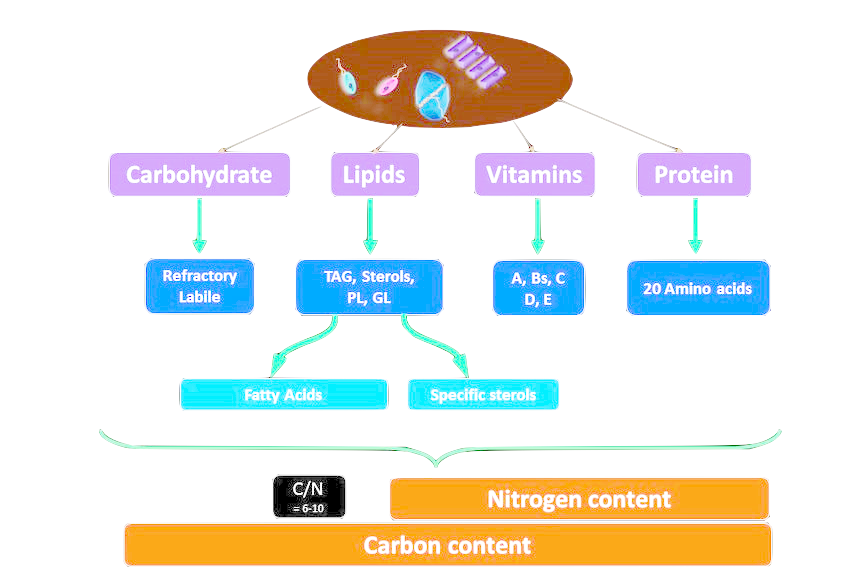
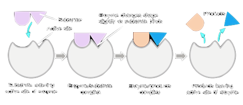

Macromolecules
Organic Chemistry is the study of all compounds that contain bonds between carbon atoms.
Macromolecules are formed by a process known as polymerization.
Most macromolecules are made from single subunits, or building blocks, called monomers. The monomers combine with each other using covalent bonds to form larger molecules known as polymers. This makes monomers release water molecules as the byproduct of the reaction. This type of reaction is known as dehydration synthesis, which means “to put together while losing water.”
Four Organic Compounds
-
Carbohydrates
Soure of energy plants produce it for structure.Carbohydrates are the sugars, starches and fibers found in fruits, grains, vegetables and milk products. Though often maligned in trendy diets, carbohydrates — one of the basic food groups — are important to a healthy diet.
Carbohydrates provide fuel for the central nervous system and energy for working muscles. They also prevent protein from being used as an energy source and enable fat metabolism, according to Iowa State University.
-
Lipids
A lipid is any of a diverse group of organic compounds including fats, oils, hormones, and certain components of membranes that are grouped together because they do not interact appreciably with water.
The membranes of cells and organelles (structures within cells) are microscopically thin structures formed from two layers of phospholipid molecules. Membranes function to separate individual cells from their environments and to compartmentalize the cell interior into structures that carry out special functions.
-
Nucleic Acid
Nucleic acids are naturally occurring chemical compound that is capable of being broken down to yield phosphoric acid, sugars, and a mixture of organic bases (purines and pyrimidines). Nucleic acids are the main information-carrying molecules of the cell, and, by directing the process of protein synthesis, they determine the inherited characteristics of every living thing.
The two main classes of nucleic acids are deoxyribonucleic acid (DNA) and ribonucleic acid (RNA). DNA is the master blueprint for life and constitutes the genetic material in all free-living organisms and most viruses. RNA is the genetic material of certain viruses, but it is also found in all living cells, where it plays an important role in certain processes such as the making of proteins.
-
Proteins
Protein, highly complex substance that is present in all living organisms. Proteins are of great nutritional value and are directly involved in the chemical processes essential for life. They are not only species specific, but also organism specfic
A protein molecule is very large compared with molecules of sugar or salt and consists of many amino acids joined together to form long chains, much as beads are arranged on a string. There are about 20 different amino acids that occur naturally in proteins.
Scan this QR Code for two fun facts about Macromolecules!
Enzymes
The biological processes that occur within a human body are chemical reactions and most are regulated by enzymes. All aspects of cell metabolism are catalyzed by Enzymes. This includes the digestion of food, in which large nutrient molecules (such as proteins, carbohydrates, and fats) are broken down into smaller molecules; the conservation and transformation of chemical energy; and the construction of cellular macromolecules from smaller precursors. Many inherited human diseases, such as albinism and phenylketonuria, result from a deficiency of a particular enzyme.
